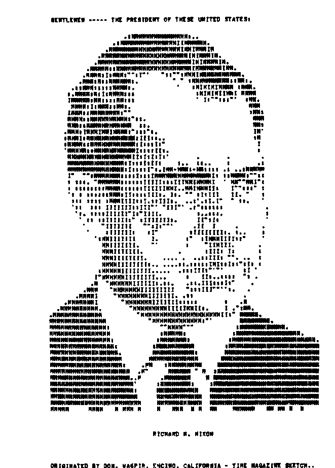
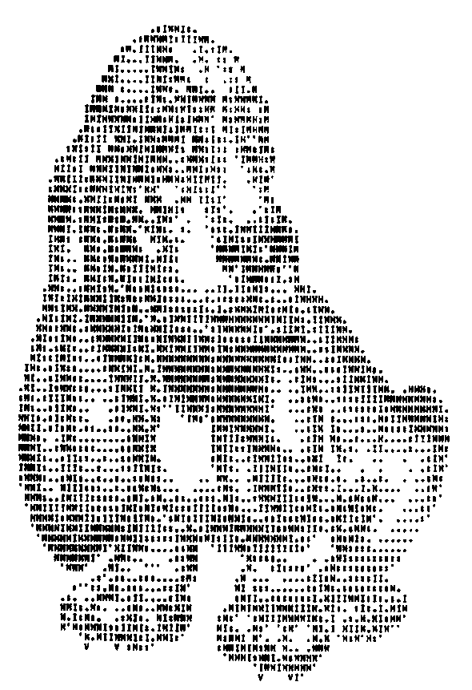
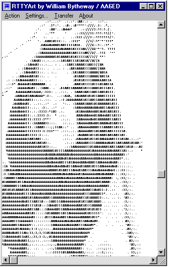
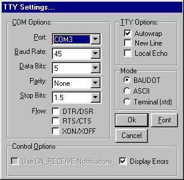
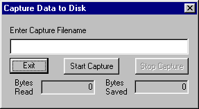
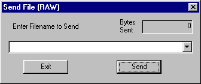
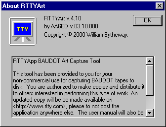
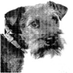
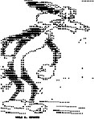
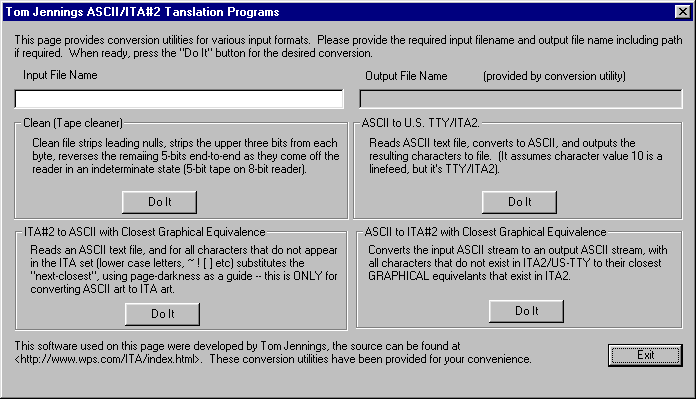

 
RTTYArt
Capture Program
by
William Bytheway
Forward
Over the years there have been many hours spent creating pictures using only the characters on the keyboard. In November 1970, Don Royer wrote, "We (the XYL Maxine and l) have found that there is much basic art work, available from which RTTY pictures may be made. Cartoons, the comic strips, post cards, magazines, newspapers, center-folds and photographs may all serve as bases for pictures. While these may not be the right size, an inexpensive child’s pantograph may be used to enlarge or reduce them. A portrait of Washington was made from the etching on the dollar bill. While it is not that important, if you have a little sketching talent, that will also help (or enlist your wife and friends as I did)."
John Foust, of The Jefferson Computer Museum, has also assembled an excellent dissertation on, and examples of, Teletype and ASCII Art. He has included a number of thumbnails of examples of some highly detailed pieces of this art form. John says, "This early computer graphics output used the visual density of printed characters to approximate gray-scale imagery, sometimes with raw letterforms, sometimes with overstrike techniques. I've collected a few in electronic form, but I'd like some originals, too."
The original pictures were composed using BAUDOT Teletype machines and punched paper tape as the storage medium. Recently an inquiry was made on the Internet to find anyone who has this art stored in his or her basements. To our surprise, there were thousands of paper tapes just waiting to be viewed. There have been various projects to capture the paper tapes to a computer in ASCII form, but no one has ever built an integrated package with a graphical user interface (GUI). This paper will describe such a project.
Sincerely,
William H. Bytheway
William Bytheway
Senior Software Engineer
Boeing Space and Defense
Introduction

Design
In order to cut the design and development time required for this project, the Microsoft Visual C++ example database was researched for an RS-232 terminal application that provided most of the functionality needed for the example. The Microsoft Source Code Samples provided an application called "TTY" that provided a basic modem-dialing program along with a scrolling text display using graphical writes to the display. With minor modification, this allowed for the viewing of character over-striking, something not available with the standard Microsoft Foundation Class (MFC) CEdit libraries.
Setting Up Communications
The "RTTYArt" software will allow users to import those paper tapes via a Hal Communications ST-6 modified for RS-232, 60-Mil current loop to RS-232, TNC or other interface. It will also allow a Terminal Node Controller (TNC) to be used if the user disables all carriage/line-feed/auto-return features in the TNC in order to capture files correctly with overstrike. The application runs on a Windows 95 or later computer.
The TTY settings dialog box allows the user to define the required settings for the RS-232 port to communicate with the Teletype machine. Following is a description of the settings.

Following is a summary of the user selectable options from this window.
Com Ports: COM1 thru COM4, configurable via Windows95 and later
Baud Rates: 45,50,57,74,100,110, and all ASCII Baud Rates thru 128K.
Data Bits: 5, 6, 7, 8
Parity: odd, even, none
Stop Bits: 1, 1.5 and 2 (where 1.5 is used for BAUDOT)
Modes: ASCII, Terminal and BAUDOT (Military)
Line Ctrl: Overstrike or automatic New-Line at 80 characters
Local Echo: On or Off
Fonts: Selectable for each workstation
Flow Control: DTR/DSR, RTS/CTS, and XON/XOFF for Terminal mode only
Capturing Files to Disk

The capture process is quite critical for the recording of the data without errors. When you start the tape, you will notice that the "Bytes Read" does not equal the "Bytes Saved". That is because the leading Letters and Null characters are stripped from the recorded data. The resultant ASCII file will be a pure recording of only the BAUDOT character set, line feeds and carriage returns. While the data is written to the display, it is also being written to the file exactly as it is being received. As the display scrolls down, certain overstrike information is lost, but the data recorded to file is exactly as received.

It was also a requirement for a user to send an ASCII file to the RS-232 port in the desired format, either ASCII or BAUDOT. Selecting this menu option brings up a dialog box that allows the user to enter a path and filename. During transmission, the bytes sent are shown, and focus is not returned to the main window until the entire file is transmitted.
About

"This tool has been provided to you for your non-commercial use for capturing BAUDOT tapes to disk. You are authorized to make copies and distribute it to others interested in performing this type of work. An updated copy will be made available on <https://rtty.internet-tty.net>, please to not post the application anywhere else. The user manual will also be made available at that WEB site."
Basic Instructions
|
  |
Tom Jennings ASCII/ITA#2 Translation Code
Another enthusiast, Tom Jennings, wrote several ‘C’ applications that provided the means of converting data files from one format to another. Among his tools are some simple ASCII/ITA translations programs, written in ANSI C, with DOS executables. They assumed U.S.TTY or ITA2 code.
His tools were incorporated into the RTTYArt project with an added graphical user interface (GUI) wrapper. The DOS calls were replaced with GUI calls for basic input and output.

The assumption is that the user is able to interface the Teletype 60-mil BAUDOT current loop to an RS-232 input into the computer. In it’s raw state, the incoming data will be 5-level BAUDOT code, or 8-level ASCII. Several transfer capabilities were added to the application.
To use the dialog box, the user simply plugs in the input file name and selects the appropriate "Do It" push button. The Output File name box will display the converted file name. Many thanks to Tom Jennings whose WEB site can be found at http://www.wps.com.
Conclusion
The project has been considered a success. The final product has been delivered to the users that have expressed an interest in converting the old BAUDOT paper tapes to ASCII. Thus an old form of artwork will be saved for future generations.
It has been distributed to a group of teletype enthusiasts that will be soon saving their tapes to ASCII files which will later be added to the https://rtty.internet-tty.net art archives. The viewer has already been developed in JAVA and allows the viewer to see the entire picture, regardless of the length.
Future plans are to add an editor to the application that will allow the user to edit the raw data input format including carriage returns and line feeds. Current editors will not allow for the selection of overstrike mode on text, which is used commonly for BAUDOT RTTY art. This project has been fun, please enjoy the results of my work.
Sincerely,
William H. Bytheway
William H. Bytheway